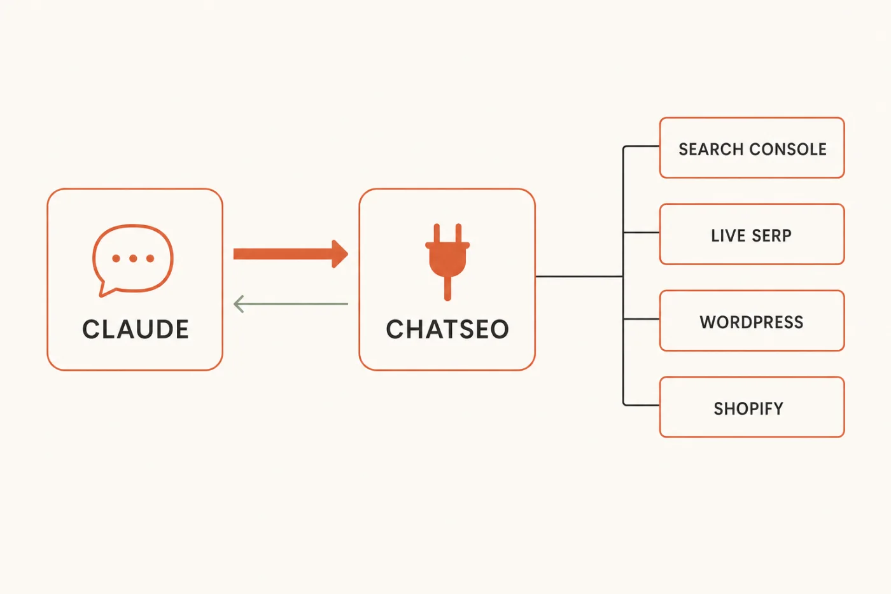
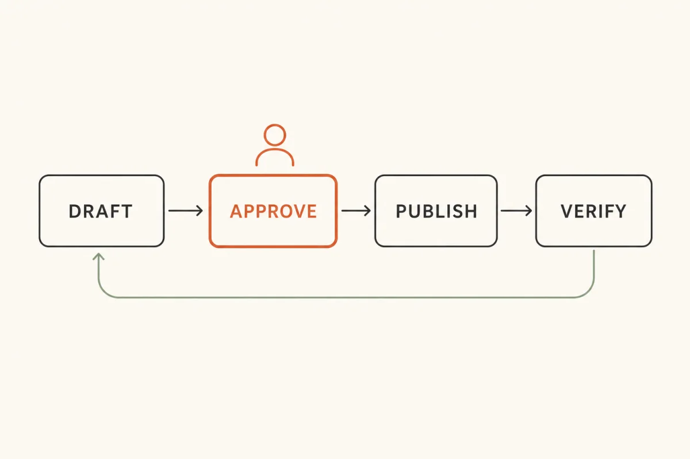

Claude can now
run your SEO
One connector, and Claude reads your live Search Console, checks the SERP, rewrites the page, ships the fix to your site, and tells you whether it worked.
How a solo founder gained 14,500 organic clicks in 100 days →
Free · No credit card required


Hey there, I'm Nicholas 👋
I grew my last B2C app to 15K Google clicks/month as a solo founder, then sold it. Turns out I fell in love with SEO along the way.
So now I'm building ChatSEO.app — an all-in-one SEO employee whose job is to make sure you rank #1 in Google and in AI search.
This is the exact setup I run, and the seven prompts I run through it. Try it free →
Claude has always known SEO. It just couldn't see your site
That gap is why "ask ChatGPT about your SEO" never turned into traffic.
The workflow everyone ended up with was: open Search Console, filter, export, paste into a chat, ask what to fix, read the answer, then go and do the work in a third tab. Three things were broken about it, and none of them were fixable with a better prompt.
The data was stale before you acted on it
By the time you'd exported, pasted and read the reply, the numbers had moved. You were optimising last week's site with last week's ranking, arguing about a position that had already changed.
It couldn't tell you what it wasn't seeing
Search Console hands you 1,000 rows and never mentions the cap. So the model analysed the tip of the iceberg with total confidence, every single time, and there was no way to tell from the answer. A confident summary of an incomplete export looks exactly like a confident summary of everything.
Nothing ever closed the loop
The advice arrived in a chat window. The change happened in WordPress. Whether it worked was a question nobody went back and asked — which is why most people have a folder of AI SEO recommendations and no idea which of them did anything.
A connector fixes all three at once. Claude queries the data live, acts on the site, and can check its own work later — because the same connection that read the number can read it again in a month.
In one line. A prompt gets you an opinion. A connector gets you a change — and then the evidence that the change did something.
The setup — 5 minutes, no API key
Two connections: your Search Console to ChatSEO, then ChatSEO to Claude. Neither one asks you for a key.
Step 1 — Connect Search Console to ChatSEO
- Create a free account at chatseo.app. No credit card.
- Add your site, then click Connect Google Search Console and authorize with the Google account that owns the property.
- That's the whole "API key" step. There isn't one — it's read-only OAuth, and you can revoke it from your Google account whenever you like.
Step 2 — Add the connector to Claude
Your MCP endpoint is the same for everyone:
https://api.chatseo.app/mcp
Then, depending on where you use Claude:
Claude Desktop
The easiest route if you're not a developer. Six clicks, no file to edit.
- Click your account at the very bottom of the sidebar → Settings.
- Scroll to the bottom of the settings sidebar, under Platform → Customize.
- Open the Connectors tab → Add, top right.
- Name it ChatSEO, paste the URL above into the second field, confirm with Continue.
- ChatSEO lists the permissions Claude is asking for → Authorize. Revocable any time from your account settings.
- Check it's live: in the message box, click + → Connectors. ChatSEO MCP should be there with its toggle on.
Claude Code
One command, then one sign-in.
claude mcp add --transport http chatseo https://api.chatseo.app/mcp
Restart Claude Code, type /mcp, pick chatseo, then Authenticate. Your browser opens — sign in and approve. It should then show as ✓ Connected.
Cursor, ChatGPT, VS Code
Same URL, same OAuth. Nothing here is Claude-only.
- Cursor — Customize → MCPs tab → + New, paste the URL. It appears under Needs Attention: click Authenticate, then Authorize. Use it in Agent mode.
- ChatGPT / Codex — Settings → Plugins (under Integrations) → MCPs tab → Add MCP server. Name it ChatSEO, type Streamable HTTP, paste the URL. Leave Bearer token and Headers empty — auth goes through OAuth, not a token.
- VS Code — Command Palette (⌘⇧P) → MCP: Add Server → HTTP, paste the URL. Then open Chat in Agent mode and check the tools are listed.
Step 3 — Prove it's connected
One line. If it comes back with your actual domains and your actual numbers, you're done setting up.
Using ChatSEO, list my sites and tell me which one has the most clicks over the last 28 days.
What "free" actually covers. A new ChatSEO account gets 5 free credits, and the connector runs on them — enough for the test above and a couple of the jobs below on your real data. Past that, connector access is part of the Pro plan, from €49/month. Better you know that now than on job number four.
Create your free account and connect it →
Takes five minutes · no credit card, no API key
The 7 jobs
Seven things the connector can do, in the order you'll actually need them.
Paste one of these and you get an answer once. Save it as a file and you get the same job, in the same shape, every time you type its name.
Every prompt below does three things on purpose: it caps its own output, it ends on one action, and it forbids invented numbers. That last rule matters more than it sounds. A connected model that guesses is worse than a disconnected one, because now you believe it.
Find the quick wins
Positions 8–15, impressions you earned but didn't convert, keywords sliding. Three signals, one job — because they compete for the same hour of your week.
Use the ChatSEO connector. If no site is set, list my sites and ask me which one — do not guess. Pull the last 28 days of Search Console data and build three lists: - STRIKE ZONE — queries in average position 8-15 with 200+ impressions - CTR GAP — pages with 500+ impressions whose CTR is under half of what their average position normally earns - LOSING GROUND — queries whose average position dropped 2+ places versus the previous 28 days Cap each list at 5 rows. Exclude brand queries everywhere — they move for reasons that have nothing to do with the page. For each row: query or URL | position | impressions | clicks | the number that put it on this list. If a figure is not in the data, write "cannot compute from this data". Do not estimate it. End with ONE opportunity: the page to work on, which list picked it, and the single change to make. Do not give me three options. Do not append a backlog.
Three lists, one decision. The reason they live in one prompt rather than three is that a page sitting at position nine with a bad title and a page that lost four places last month are both "urgent" in isolation — you only learn which one to do first when they're scored against each other.
Explain what changed
The useful half of a traffic drop isn't the ranking. It's whether you lost position or lost CTR — two completely different fixes.
Use the ChatSEO connector on my active site. Ask me for the cutoff date if I didn't give one. Do not date a Google update from your own knowledge — ask. Compare the 28 days after the cutoff to the 28 days before, page by page. Rank by absolute clicks lost, never by percentage — a page falling from 8 clicks to 2 is not a priority. Top 5 losers only: URL | clicks before | clicks after | clicks lost | cause. Name the cause from the data, and be specific: - position dropped -> a content or authority problem - position stable, CTR dropped -> a SERP problem: someone else's title, or a new AI overview sitting above you - both stable, clicks still down -> impressions fell. That's demand, not ranking. Say so and stop. Do not speculate beyond what the numbers support. End with the ONE page to fix first, and why that one.
"Which pages lost the most clicks since the last Google update?" is the question everyone asks. The instruction that makes the answer trustworthy is the one telling it not to date the update from memory — models are confidently wrong about update timelines, and a wrong cutoff produces a beautifully formatted table of nonsense.
Research a keyword or a competitor
What this replaces: Search Console for what you already rank for, a keyword tool for volume, Google itself for the SERP, and a spreadsheet to hold it all together.
Use the ChatSEO connector. I'll give you a keyword or a competitor domain. For a KEYWORD: 1. Pull search volume and the related queries that actually carry volume. 2. Pull the live SERP. Top 10: URL | page type | roughly how long | what the page is actually about. 3. Check my own Search Console — do I already rank for this, or anything adjacent? If yes, name the page and its position. 4. Say what the top 3 have in common that the rest don't. That is an observable pattern, not a theory about the algorithm. For a COMPETITOR: 1. Pull their ranked keywords. 2. Cross them against my Search Console queries. 3. Report only the gaps — what they rank for and I don't — with their position and the page doing it. Cap every table at 10 rows. Never invent volume, difficulty or traffic figures: if the data isn't there, write "not available" and move on. End with ONE angle: the page to write or update, the exact query it targets, and the one thing it has to do better than the current #1.
Point 4 is the one that earns the prompt. Anyone can list the top ten. Saying what the top three share that positions four to ten don't is the difference between a SERP screenshot and a brief you can write from.
Rewrite the title and description
Most underperforming titles aren't badly written. They're written for the query the page was meant to rank for, not the one Google actually shows it for.
Use the ChatSEO connector on my active site. I'll give you a URL. 1. Fetch the page and read its title and meta description as they are live right now. Do not work from memory. 2. Pull its top 10 Search Console queries by impressions, with position and CTR for each. 3. Tell me which query the page is actually being found for. It is often not the one it was written for. Then write ONE title (max 60 characters) and ONE meta description (max 155 characters), built from the real query rather than from the page's own headline. Hard rule: the title has to be true to what is on the page. If the page doesn't deliver what the winning query wants, say so and stop — a better title on the wrong page buys a bounce, not a ranking. Give me one version, not three. Close with the page's current CTR and the CTR its average position normally earns, so I know what "it worked" will look like.
The last line is the quiet one. A rewrite with no baseline is a change you can never grade. Two numbers — what you get now, what the position should earn — turn it into a measurable bet.
Ship it to WordPress or Shopify
The step that used to be yours. Claude applies the change through the connector — then reads the live page back to check it actually landed.
Use the ChatSEO connector. Before touching anything: 1. Confirm the CMS is connected. WordPress: run the connection test. Shopify: list the blogs. If either fails, stop and tell me exactly what is missing — never attempt a partial publish. 2. Show me the before and after, field by field, and wait for my explicit "go". Never publish on an implied approval. Then apply the change. Publish as a DRAFT unless I said "publish live". Then VERIFY. This step is not optional: - Re-fetch the live URL and read back the field you changed. - Quote what is live now. If it doesn't match what you sent, write "the change did not land", show both values, and stop. Finally, create a ChatSEO todo with: the URL, today's date, the field changed, and the metric to check. That is what makes the result measurable in 28 days. End with one line: what changed, where, and when to check it.

Two rules in that prompt are doing all the work. Draft by default, so the worst case is an unpublished revision rather than a live mistake. And verify by re-fetching, because "I updated the title" and "the title is live" are different claims, and only the second one is worth anything.
Run it on a schedule
Seven prompts you have to remember to run is a to-do list. One that runs without you is a system. This is the only one that repeats.
Use the ChatSEO connector on my active site. Compare the last 7 days of Search Console data to the 7 days before. Under 250 words: - total clicks and impressions, with the change - the 3 biggest gaining pages - the 3 biggest losing pages Ignore any page moving fewer than 10 clicks — weekly noise is not news. Then check my open ChatSEO todos. For any change shipped more than 28 days ago, say whether that page's clicks went up, down, or nowhere since. If the window is too short to judge, write "too early" — do not call it a win. If nothing meaningful moved, write "quiet week" and stop. Do not manufacture an insight to fill the space. End with ONE action for this week.
How to actually schedule it. In Claude Code you can hand it to a scheduled agent and it runs without you. In a client with no scheduler, put it in the calendar for Monday morning — it's a ten-minute read, not a project. And if you'd rather schedule nothing at all, ChatSEO already emails a weekly report every Monday covering the same ground.
The second half of the prompt is the part people skip. Checking last month's shipped changes against this month's numbers is the only thing that stops the loop from becoming a pile of untested opinions about what Google likes.
Answer questions in plain English
Not a job — a set of house rules. Load it once, and every question you ask afterwards gets answered from your numbers instead of from what's generally true about SEO.
When I ask a question about my SEO, answer it from the ChatSEO connector, in plain English, in under 150 words. Rules for every answer: - Pull the data first. Never answer a question about MY site from memory or from general SEO knowledge. - Always give the number and the period it covers. "Clicks are up" without a window is not an answer. - If the data can't answer the question, write "cannot compute from this data" and say what would be needed. Do not estimate, do not extrapolate, do not round a guess into a figure. - Correlation is not cause. If a page moved and I shipped a change, report both. Don't tell me the change caused it unless nothing else moved. - No recommendation unless I asked for one. A question is a question.
Questions that work once this is loaded: "Which keywords gained positions this week?" · "Which pages should I update first?" · "Did that fix actually improve CTR?" · "Am I losing ground on anything that makes money?"
The thing all seven share. Each one ends with a single action, not a list. Seven prompts returning twenty recommendations each is a 140-item backlog, which is functionally the same as no backlog at all.
Save them, so you type a name instead of a prompt
Pasting works. Saving is better — same job, same shape, every time, with no slow drift in the wording that makes this month's output incomparable to last month's.
- Claude Code — save the prompt as
~/.claude/skills/<name>/SKILL.mdwith a name and description in the frontmatter, then type/<name>. - Claude Desktop / claude.ai — put the file in a folder, zip it, and upload it under Settings → Skills.
- Anywhere else — paste the prompt into a project's custom instructions and call it by name.
If you write a description, write it as when to use this, not what this is. That sentence is what the model reads to decide whether to run the thing at all.
The routine
Seven jobs is not seven weekly tasks. One repeats. The rest fire on a trigger.
Every Monday — 10 minutes
6 · /monday-run → do the one action it names → close the tab. That's the whole weekly commitment.
Monthly — 30 minutes
1 · /quick-wins → whatever page it names, run 4 · /rewrite-meta on it → 5 · /ship-it.
That chain is the entire system: find it, write it, ship it, verify it. Three prompts, one page, half an hour. Next month's /monday-run tells you whether it worked.
On a trigger
- Traffic dropped, or Google shipped an update → 2 · /what-changed
- About to write or update a page → 3 · /keyword-brief
- Any question at all → just ask, with 7 · /seo-answers loaded
Don't set up all seven this week. Set up two: /monday-run and /quick-wins. Run them for a month. Add the rest when those two feel automatic.
The 5 mistakes that kill this
Letting it publish without reading the diff
A connector that can edit your site is exactly as dangerous as it is useful. Draft first, live second, and read the before-and-after every single time.
Asking it to "do my SEO"
Vague in, vague out. You'll get a twenty-item audit you will never action. One job per prompt, one action per answer.
Trusting a number it didn't pull
Every prompt above forbids estimation on purpose. If an answer contains a confident figure and no data call behind it, ask where the number came from before you act on it.
Skipping the verify step
"I updated the title" and "the title is live" are different claims. The second costs one extra fetch and is the only one worth anything.
Running all seven every week
You'll spend an hour reading and zero minutes fixing. One weekly read, one action, close the tab.
What the chat can't do: remember
Worth being straight about, because you'll hit it in week two.
A connector gives Claude your data on demand. It does not give the conversation a memory. Every new chat starts from zero: it can re-pull the numbers, but it doesn't know which pages you already fixed, what you changed, when you shipped it, or what you were waiting to see. So the seven jobs above work perfectly, and the loop still leaks — because the record of your own work is sitting in your head.
That's the half a chat window structurally can't hold. It's what ChatSEO keeps on the other side of the connector: the site, the conversation history, the todos each shipped change writes, and the Monday report that grades them. Claude is the interface. The record has to live somewhere that doesn't reset.
Connect Claude to ChatSEO free →
Where this still needs you
- Approval on anything that goes live. It can publish. It shouldn't be the one deciding to.
- Whether the page can honestly deliver the query. Claude will write the title that earns the click. Only you know if the page behind it keeps that promise.
- What's worth building. Job 3 finds the demand. Whether it's demand you want is a business decision, not a data one.
- The weird stuff. If a number looks wrong, it might be. Go and look.
How one founder went from 250 → 750 clicks a day
He added +14,500 clicks just by chatting with AI.
No SEO expertise. He simply ran the recommendations he was given.

Why this works when old SEO tools don't
Here's the blunt truth about SEO in 2026.
Old SEO tools
- Insights buried in 100 pages of dashboard
- Hours of exporting before you learn anything
- Five tools that don't talk to each other
- Advice that stops at the recommendation
- Nothing ever checks whether the fix worked
What you actually want
- The one page to fix, found in 30 seconds
- Live data, not a Tuesday export
- One connection, from data to CMS
- The fix shipped, not just described
- The change verified, then graded a month later

That's the entire idea behind ChatSEO
One SEO employee that reads your Search Console, finds the page sitting at position nine, writes the fix, ships it to your site — and tells you a month later whether it worked. From your Claude chat, or from ChatSEO itself.
Try ChatSEO free →No credit card required